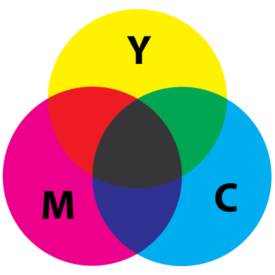

Color Rush est un jeu de perception et de vitesse, basé sur la reproduction de couleurs.
À chaque niveau, vous avez un temps limité pour reproduire une couleur en utilisant des curseurs. Mais le temps alloué se réduit en accédant à des niveaux supérieurs.
À la fin du temps imparti, l'algorithme (décrit plus tard) calculera la distance entre la couleur que vous avez créé, et celle que vous auriez du créer. Pour accéder au niveau suivant, il faut que cette distance soit inférieure à 20%. Donc les couleurs doivent se ressembler à au moins 80%.
Vous pouvez accélérer le compte à rebours, si vous pensez avoir déjà trouvé une couleur proche de la couleur cible en avance.
Les différents modes permettent de choisir la manière dont vous produirez les couleurs : À l'aide de l'espace de couleur RGB, HSL, ou CMJ. Ces espaces de couleur sont décrits de manière plus détaillée dans la partie dédiée .
L'objectif est d'atteindre le niveau 10.
Ce projet fonctionne grace au HTML, css, et javascript natif.
Nous avons mélangé dans ce projet la programmation procédurale et orientée objet. Ce dernier type permet de créer des ensembles de variables et fonctions qui intéragissent ensemble, notament au moyen des properties Set et Get.
Les objets crées sont :
Il gère toute les fonctions liées aux noyau du jeu. Par exemple, c'est lui qui appelle les fonctions d'initialisation du jeu lorsqu'une partie commence. C'est également lui qui calcule le score, qui s'occuppe d'amener au niveau suivant en cas de victoire, et d'arrêter le jeu en cas de défaite.
En plus d'effectuer tous les calculs, il appelle les fonctions graphiques et audio qui donnent l'interactivité du jeu.
Un exemple de property de cet objet est le "get gameMode()"", qui récupére en temps réel le mode de jeu sélectionné par l'utilisateur.
Ses méthodes sont appelées par l'objet "game" au moment adéquat.
Il se charge des animations, comme par exemple celle qui appraît lorsque le temps est écoulé, ou lors de défaite, etc. tous les éléments graphiques sont manipulés par cet objet. C'est notament une méthode de cet objet qui initialise la forme du terrain de jeu avant de commencer une nouvelle partie : positions, valeurs d'affichages..
Une de ses méthodes très importantes est "newMessage" : Elle permet d'afficher les messages qui apparaissent en grand au milieu de l'écran, souvent accompagnés d'une voix. Une manipulation des propriétés d'affichages de transformation et de filtres, et de création/suppression d'éléments du DOM (document object model) ont permis de donner un effet léger et très dynamique à ces messages. Vous pouvez essayer, depuis la console, en entrant " affichage.newMessage(votreMessage) " (Ils s'affichent dans la zone de jeu !)
Il y a deux instances à cette classe, "mySquare" et "targetSquare".
Cette classe ne crée pas un carré, mais le récupère dans le DOM, vu qu'ils ne sont qu'au nombre de deux. Elle sert à remplir les carrés de couleur à l'aide d'une property SET, et à la récupérer à l'aide d'une property GET, tout celà dans le but de pouvoir effectuer les calculs de distance de couleur.
Elle possède également une méthode définissant une couleur aléatoire, utilisé pour changer la couleur du carré cible lors du passage à un niveau supérieur.
Il gère le temps à chaque niveau. Il définit quel est le temps alloué, et renvoie à la méthode de l'objet jeu qui vérifie les scores, lorsque le temps est écoulé ou lorsqu'il est arrêté manuellement, quand l'utilisateur appuie sur le bouton Check.
Avant d'entrer dans les explications, il faut noter que quelque soit l'espace de couleur utilisé pour produire des couleurs à l'écran, le navigateur effectuera une conversion et les affichera en RGB, systématiquement. Les calculs de distances seront donc indépendants du mode de jeu choisi.
La première méthode qui viendrait à l'idée serait de calculer la distance euclidienne entre les deux points dans l'espace 3D RGB
L'algorithme qui utiliserait cette formule serait fonctionnel, mais le jeu serait injouable : En effet, l'espace de couleur RGB n'est pas perceptuellement uniforme pour l'humain. Cela signifie que deux couleurs pourront nous paraître similaire alors qu'en réalité leurs composantes RGB sont assez éloignées.
Pour remédier à ce problème, il existe plusieurs formules de calcul de distances de couleurs, pondérées pour correspondre à la perception humaine des couleurs. Celle qui a été retenue dans ce jeu a été établie par la comission internationale de l'éclairage, en 1976 :
Cette formule permet de jouer agréablement car effectivement, deux couleurs qui se ressemblent à nos yeux d'humains sont calculées comme proche, et inversement.
Elle utilise l'espace de couleur CIELAB.
Le jeu convertit alors les couleurs de RGB vers CIELAB, et calcule la distance entre les deux couleurs CIELAB grâce à la formule ci-desus. Nous avons pour ces deux fonctionnalités utilisé des fonctions open-source (Sur github).
Les transformations utilisées dans ce jeu sont la mise à l'échelle, la translation et la rotation (à moindre mesure).
La mise à l'échelle est utilisée pour l'animation du carré du menu. À intervale régulier, le carré subit une mise à l'échelle de 1%, puis revient à son échelle d'origine une fraction de seconde après.
D'ailleurs, le carré bouge en rithme avec la musique : C'est parce que le BPM de la musique a été convertit en intervale en ms (fonction "parseBpmIntoInterval"), qui a été utilisé dans le setInterval() qui déclenche l'animation.
Les tranlations sont utilisées pour déplacer les carrés lors des animations pour la vérification des distances de couleur, de défaite, et bien sûr dans la fonction "clear" qui réinitialise le terrain de jeu.
Elle a été utilisée uniquement pour fabriquer la flèche qui pointe vers le bas dans le menu : C'est une div carrée qui n'a que deux "border" contigus, et qui a été rotationnée de 45°.
Les modes de jeu proposés correspondent à 3 espaces de couleur : Rgb, HSL, et CMJ. Nous n'avons pas inclut l'espace RGBA car il requiert une quatrième composante, ce qui était laborieux à mettre en place.
L'espace de couleur RGB (red, green, blue) est un espace de synthèse additive, dans lequel les couleurs sont définies par leur quantité de rouge, de vert, et de bleu (Les 3 couleurs primaires additives).
La particularité d'un espace additif est que sa fonction est d'apporter des couleurs à un fond noir.
RGB est un espace de couleur adapté pour la synthèse d'image informatique, car le système visuel humain fonctionne (presque) de manière similaire.
Abréviation de Hue Saturation Lightness, l'espace HSL définit une couleur par sa teinte, sa saturation, et sa luminance.
Cet espace existe car il est plus facile à prendre en main que l'espace RVB. La sélection de couleur est plus intuitive. C'est une approche psychologique de la synthèse de couleur.
À noter que cet espace a à l'origine été inventé lors du passage de l'image à la couleur : Il permettait d'encoder les images en couleur sans modifier profondément la technique d'encodage déjà existante : Il a suffit d'ajouter deux composantes "teinte" et "saturation" à la composante "Lumière", qui définissait à elle seule une image en nuances de gris.
L'espace CMY (Cyan magenta yellow, CMJ en français) est contrairement au RGB, un espace soustractif. Il sert principalement dans le domaine de l'impression.
La caractéristique d'un espace soustractif est qu'il a pour fonction de masquer un fond blanc. L'encre réduit la luminosité, et empêche le blanc d'être reflété.
En réalité, l'impression utilise une variante du CMY : Le CMYK. Le K, "key", est le niveau de noir. C'est une question d'économie, afin de ne pas utiliser le mélange des 3 couleurs pour former du noir, noir qui est très présent dans l'impression.
Le RGB a pour fonction de remplir un fond vide de couleur (noir), alors que le CMY a pour fonction de masquer un fond contenant toute les couleurs (blanc).
Les couleurs primaires du RGB sont le rouge vert et le bleu, alors que les couleurs primaires du CMY sont le cyan, magenta, et jaune. Le cyan et le magenta donneront du bleu, le cyan et le jaune donneront du rouge, et le cyan et le jaune donneront du vert. 
L'expérience de jeu est mise en relief par des élements audio qui accompagnent les élements graphiques.
D'abbord les musiques d'ambiance. Celle de l'accueil a été crée par Thibo, et celles du jeu par TPRMX.
Ensuite, lors du compte à rebours, lors du passage à un niveau supérieur, et lors de l'annonce de la ressemblance des couleurs, des voix sont joués correspondante à la situation. Par exemple, l'algorithme de vérification des résultats est prévu pour lancer l'audio d'une voix qui crie "Perfect ! " si le pourcentage d'erreurs est inferieur à 3%, "GREAT ! " si inférieur à 6%, etc.
Tout cela est rendu possible grâce à la création d'objets audio ayant pour source le lien relatif du fichier audio. Ensuite, il faut appler la méthode play de cet objet pour lancer l'audio, la méthode pause pour le couper, la méthode set currentTime pour définir le time code de l'audio, le tout mélangé à des events listeners pour donner un résultat intéressant.
Le jeu est sympathique, mais absolument pas sécurisé. Les codes de couleurs sont visibles dans le code source de la page, en temps réel. Donc dans le mode RGB, il est très simple d'accéder au niveau 10 en recopiant les codes couleur trouvés dans le code source.
Une manière de palier à celà serait que les carrés ne soient pas des div, mais des canvas. Celà ferait que le code couleur ne s'afficherait pas dans l'inspecteur, car les carrés seraient lus comme des fichiers image, non pas des élements html.
Il faudrait tout de même trouver un moyen de bloquer les extensions telles que colorZilla, qui permettent de récupérer n'importe quelle couleur visible dans le navigateur.
Mais même cela ne serait pas suffisant, car il existe également des logiciels type colorzilla installables sur l'ordinateur, qui seraient indétectables par le navigateur.
L'affichage des couleurs dépend de la qualité de l'écran. Ainsi, tout les joueurs ne sont pas sur le même pied d'égalité.
Il dépend aussi d'applications de filtre de couleurs, telles que F.lux qui permettent de filtrer la lumière bleue au coucher du soleil.
Si tous les problèmes mentionnés étaient réglés, le jeu pourrait posséder un système de leaderboard online qui classe les scores des joueurs selont le mode de jeu.
À une autre échelle, le jeu pourrait être une sorte de battle royale multijoueur, c'est à dire que les parties seraient joués en temps réel par un nombre important de joueurs, et qu'un seul joueur serait gagnant. Le gagant serait celui qui a survécu le plus longtemps.